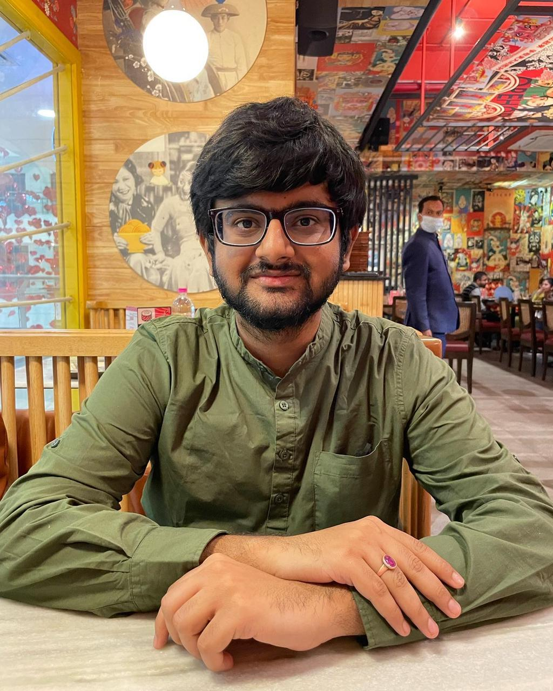

|
I am a Software Engineer at Parallel Wireless, Inc., where I work on embedded protocol stack development. Previously, I completed my undergraduate studies in the Department of Electronics and Communication Engineering at the Indian Institute of Information Technology Guwahati. During my undergraduate studies I have extensively worked on Approximate Computing and its various applications. In my undergraduate journey, I was advised by Dr. Dip Sankar Banerjee, Dr. Soumyajit Poddar, Dr. Neeraj Goel, and Prof. Muhammad Shafique. My research interests include approximate computing, computer architecture, networked embedded systems, healthcare IoT, and VLSI Design. Email / CV / Google Scholar / LinkedIn / ResearchGate |
 |
{kind=link}
Research

|
ApproxBioWear: Approximating Additions for Efficient Biomedical Wearable Computing at the Edge |

|
ACLA: An Approximate Carry-Lookahead Adder with Intelligent Carry Judgement and Correction |

|
SEAMBA: A Semi-Approximate Multiplier using Block-Based Approach and Rounding |

|
Disruptive Factors Influencing Women's Education during COVID-19 |

|
An Approximate Carry Estimating Simultaneous Adder with Rectification |

|
ReARM: A Reconfigurable Approximate Rounding-Based Multiplier for Image Processing |

|
ACEP: An Accuracy-Configurable Carry Estimating Parallel Adder |